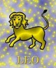

<html>
<head>
<title>Oroszlán</title>
<script type="text/javascript" src="js/public.js"></script>
<script type="text/javascript" src="js/subpage.js"></script>
<script language="JavaScript1.1">
IMG_PICT="images/inte/horo/" 
horopict = ""
var subpage = new Array(
horopict+"Uralkodásra, vezetésre való hajlam, akaratos, állandó harcra kész. Nagy az önbizalma. Határozott, tekintélyt parancsoló. A társaságban igyekszik azonnal a középpontba kerülni. Szereti, ha körüludvarolják, ha ez valamiért elmarad, akkor szünet nélkül morgolódik, elégedetlenkedik, vagy ott hagyja a társaságot. Optimizmusa töretlen, mindig sikerre, nagy attrakciókra készül, ennek érdekében emberfeletti erõfeszítésre is képes. Célja eléréséhez, mindig a legrövidebb, legegyenesebb utat választja. Erõszakkal semmit nem lehet elérni nála, de hízelgéssel, szeretettel, szép szavakkal igen. Hiú, de rendkívül segítõkész, nagyvonalú. Haragja hamar elmúlik, könnyen felejt, hamar megbocsát, de az elsõ lépést sosem õ teszi meg. Sosem rágódik a múlton. Az Oroszlán jegyû ember pedig uralkodik saját magán és rajtunk is. Az utóbbit nem is titkolja, szeret parancsolgatni és irányítani. Ha ez nem adatik meg neki hivatása területén, akkor a családi életben igyekszik kárpótlást szerezni. Az Oroszlán jegyûekkel nagyon óvatosan kell bánni, hiszen rendkívül büszkék és hiúak. Ne sértsük meg tehát õket hiúságukban, mert akkor az egyébként lágyszívû macskákból vérszomjas ellenséggé válnak. Tudni kell róluk még azt is, hogy hiúságuk olyan nagyfokú, hogy a hízelgésnek soha nem tudnak ellenállni. És ez egyben a gyenge pontjuk is, mert a talpnyalók könnyen tévutakra vihetik õket. ",
horopict+"Az Oroszlán-jegy uralkodó bolygólya a Nap, nem véletlen tehát, hogy e jegy szülöttei is szeretnek csillogni-villogni. Az Oroszlánok nagy lábon élnek, még akkor is, ha anyagi helyzetük nem túl fényes. Mindebbõl úgy tûnhet, hogy számukra rendkívül fontos a pénz, a vagyon. Ebben van némi igazság, de arról szó sincs, hogy a fogukhoz vernék a garast. Nemcsak önmagukkal szemben nagyvonalúak, hanem a környezetükben élõkkel is. Egy cseppet sem haragtartóak és bosszúállóak, könnyen felejtenek. Ha már kiordítozzák, kitombolták magukat, a következõ percben úgy tesznek, mintha mi sem történt volna. Aki Oroszlán férjet választ magának, az soha ne feledje, hogy élete párja elvárja, hogy felnézzenek rá, csodálják õt. Arra is fel kell készülnie, hogy gyakran tölti estéit, hétvégéit egyedül, mert férjének fontosabb az a baráti társaság, amelyikben õ lehet a központban, ahol szerepelhet. Egyébként rendkívül kellemes partner az Oroszlán férfi, gyakran lepi meg nejét drága parfümmel, csodálatos csokrokkal, és elegáns vacsorákra is vendégül látja. Aki Oroszlán feleséget választ magának, annak élete párja okos, kedves, nagyvonalú lesz. Arra is fel kell készülnie, hogy a kalapot majd nem õ viseli odahaza, hanem a neje. Az Oroszlánokat sohasem kell bátorítani, nagyon is tudják, hogy mit kell tenniük céljaik eléréséért. Ha fontos a számukra valami, akkor azért készek áldozatokra és kemény, kitartó munkára is. ",
horopict+"Egyébként hajlamosak a lustaságra, vagy finomabban fogalmazva szeretik a kényelmes életet. Rendkívül könnyen tanulnak. ",
horopict+"<b>Bolygója:</b> a Nap<br>"
+"<b>Eleme:</b> a tûz<br>"
+"<b>Természete:</b> szilárd<br>"
+"<b>Erényei:</b> nyílt, egyenes, megbízható, kitartó, bátor, bõkezû<br>"
+"<b>Hibái:</b> hiú, beképzelt, hirtelen haragú, törtetõ<br>"
+"<b>Testrésze:</b> a szív <br>"
+"<b>Betegségre való hajlam:</b> szív- és keringési zavarok, gerincbántalmak, elsõsorban lumbágó<br>"
+"<b>Védõkövek:</b> rubin, hegyikristály, aranytopáz, tigrisszem, borostyán <br>"
+"<b>Szerencsekövek:</b> gyémánt, krizoberill, karneol, topáz, peridot, aventurin"
);
</script>
</head>
<BODY background="images/public/background/bg1.jpg">
<script language="JavaScript1.1">
	firstdraw("OROSZLÁN július 23. - augusztus 23.");
</script>
</body>
</html>